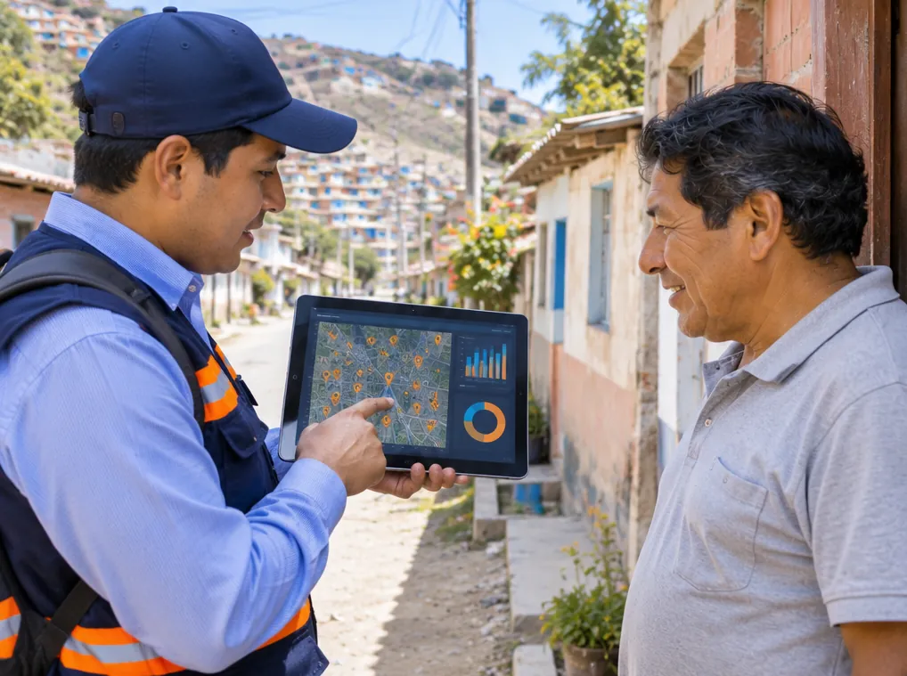
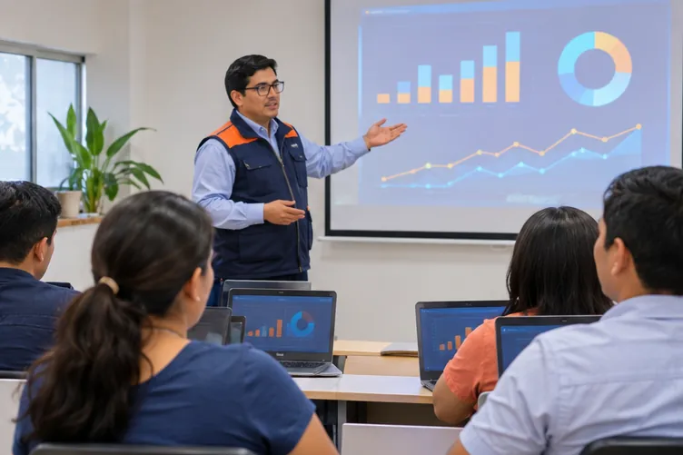
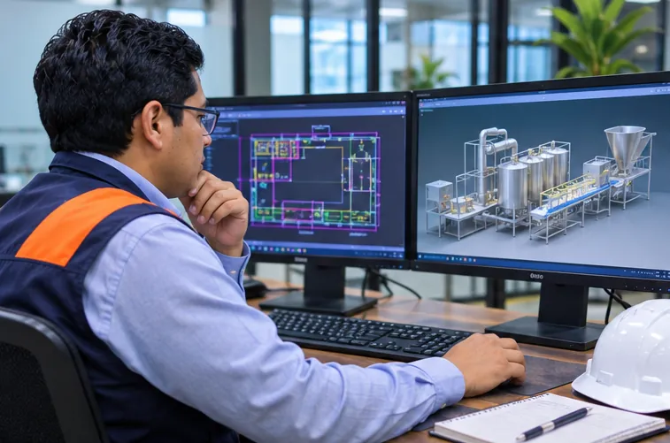
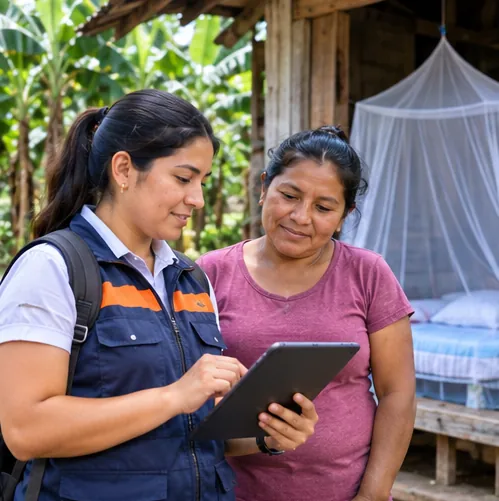
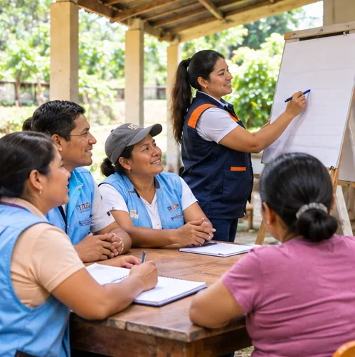
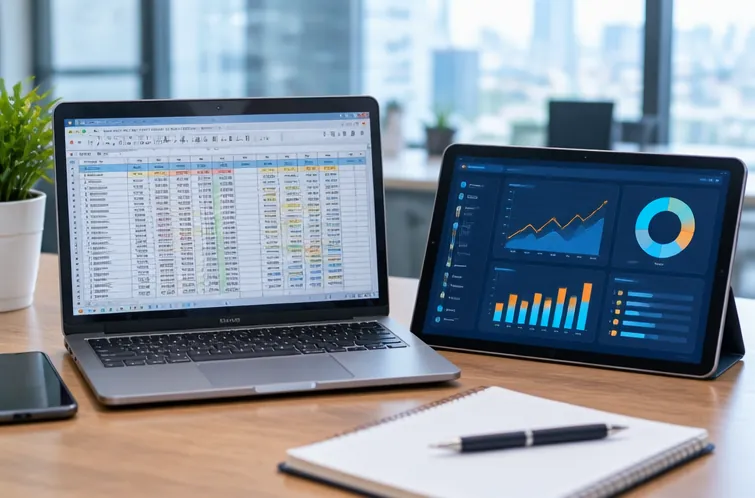

Todo depende del Excel
Varias versiones del mismo archivo, datos copiados a mano y errores que nadie detecta a tiempo.
Automatización|Sistematización|Inteligencia artificial
Convertimos procesos manuales, hojas de cálculo dispersas y reportes que toman días en sistemas ordenados, automáticos y con inteligencia artificial, para que tu organización trabaje menos en lo repetitivo y decida mejor con datos.

Flujos que registran, avisan, consolidan y reportan solos, para que tu equipo deje de hacer tareas repetitivas.
Ver servicios → 🗂️Sistemas a medida, bases de datos ordenadas y tableros de indicadores para decidir con información confiable.
Ver servicios → 🧠Asistentes, agentes y modelos que leen documentos, responden consultas y anticipan resultados.
Ver servicios →¿Te suena familiar?
Varias versiones del mismo archivo, datos copiados a mano y errores que nadie detecta a tiempo.
Cada fin de mes alguien junta información de varias fuentes para armar el mismo informe.
WhatsApp, cuadernos, correos y formularios: los datos existen, pero no se pueden usar para decidir.
Registrar, avisar, recordar y consolidar a mano le quita tiempo al trabajo que de verdad aporta valor.
Sabes que la inteligencia artificial puede ayudarte, pero no sabes por dónde empezar ni cuánto cuesta.
Empezamos por lo que más te duele, con soluciones simples, medibles y que tu equipo puede usar desde el primer día.
Nosotros
Somos Gidex consulting, una consultora peruana de ingeniería y tecnología nacida en Piura, con presencia en Piura y Lima. Unimos la experiencia en procesos productivos, gestión de calidad y ciencia de datos para ayudar a empresas, colegios e instituciones a trabajar de forma más ordenada, automática e inteligente.
Impulsar la transformación digital de empresas, instituciones educativas y organizaciones del Perú mediante soluciones de automatización, sistematización e inteligencia artificial que sean accesibles, medibles y fáciles de usar, para que trabajen con más eficiencia y tomen mejores decisiones con sus datos.
Ser al 2030 la consultora de referencia del norte del Perú en automatización e inteligencia artificial aplicada, reconocida por convertir la tecnología en resultados concretos para las organizaciones y por acercar la innovación a las pequeñas y medianas empresas.
Lo que nos guía
Equipo

Cofundador · Automatización, procesos y calidad
Ingeniero agroindustrial y de biocomercio, especializado en gestión de calidad y control de procesos productivos. Automatiza procesos y genera reportes dinámicos con Power BI, Power Query y Access, con enfoque en la mejora continua, la eficiencia y la trazabilidad.

Cofundador · Ciencia de datos e inteligencia artificial
Ingeniero agroindustrial y de biocomercio, especialista en ciencia de datos, inteligencia artificial y gestión de información, con más de 5 años en proyectos de salud pública, desarrollo territorial y cooperación internacional. Coautor del libro «Investigar es fácil: una guía para la formación de futuros investigadores».
Servicios
Trabajamos en tres líneas que se complementan: automatizar lo repetitivo, sistematizar la información y aplicar inteligencia artificial donde genera valor real. Atendemos a empresas, industria, instituciones públicas, organizaciones sociales, ONG y proyectos de investigación de cualquier sector.
Flujos que trabajan solos: registros, avisos, recordatorios, consolidación de datos y reportes automáticos.
Digitalizamos tus procesos con aplicaciones web y móviles fáciles de usar, conectadas a una base de datos ordenada.
Asistentes, agentes y modelos que leen documentos, responden consultas y anticipan resultados.
Indicadores claros y actualizados en tiempo real para decidir con datos, no con intuición.
Evaluamos el nivel tecnológico de tu organización y trazamos una hoja de ruta por etapas para digitalizarla.
Llevamos nuestra experiencia en campo y planta a sistemas de calidad, trazabilidad y producción.
Diseñamos instrumentos de recolección, encuestas en línea y estudios de línea base con análisis riguroso.
Ubicamos en el mapa tus encuestas, proyectos, clientes o recursos para analizarlos por territorio, en cualquier sector.

Formamos a tu equipo para que aproveche las herramientas y sea autónomo.

Diseñamos la distribución de tu planta y tus equipos de proceso en planos 2D y modelos 3D, antes de construir o invertir.
Organizamos el mantenimiento de tus máquinas y equipos para reducir paradas y alargar su vida útil.
Implementamos y digitalizamos tus sistemas de gestión de calidad, inocuidad y seguridad y salud en el trabajo.
Te apoyamos con los instrumentos, el cálculo de la muestra, el análisis estadístico y la interpretación de los resultados de tu investigación.
Planes y precios
Precios referenciales para que tengas una idea antes de conversar. El costo final depende del alcance y siempre te lo damos por escrito después del diagnóstico gratuito.
Para quien quiere dejar de hacer a mano una tarea que le quita tiempo.
Desde S/ 600
Para ordenar un proceso completo con una aplicación y su tablero de indicadores.
Desde S/ 2 500
Para organizaciones que quieren un plan integral con inteligencia artificial.
A medida
Precios en soles, no incluyen IGV. Aceptamos pago por etapas.
Cómo trabajamos
Conversamos contigo, revisamos tus procesos y detectamos dónde se pierde más tiempo.
Te entregamos el alcance, el plazo y el costo por escrito, priorizando lo que da resultados más rápido.
Construimos y te mostramos avances frecuentes para que valides cada parte antes de seguir.
Formamos a tu equipo y acompañamos los primeros días de uso real.
Medimos resultados, resolvemos dudas y seguimos mejorando la solución contigo.
Producto propio
Desarrollamos Algarrobo, una plataforma para colegios privados que reúne en un solo lugar la matrícula, las notas por competencias, la asistencia con código QR, las pensiones, la comunicación con las familias, el aula virtual y una pizarra digital con reconocimiento de letra y dictado por voz.
Experiencia del equipo
Nuestro equipo ha participado en proyectos de salud pública, planificación territorial, cooperación internacional, agroindustria y educación.

Salud pública · BoliviaEncuesta en línea en HTML, base de datos en Google Forms integrada con Apps Script y análisis de conocimientos, actitudes y prácticas en Python.
Automatización · Análisis de datosIndicadores con logros proyectados y fichas técnicas en siete dimensiones para el plan de desarrollo concertado de un distrito de Cajamarca.
Sistematización · IndicadoresProcesamiento de datos y estimación de estadísticos para la formulación del plan estratégico sectorial multianual 2024-2030.
Análisis de datos
Cooperación · Salud comunitariaSistematización y análisis de reuniones con autoridades y agentes comunitarios de salud en proyectos implementados por Unicef y Prisma.
SistematizaciónAplicación de registro de ventas en AppSheet, base de datos en SQL y reportes de KPIs en Power BI.
Sistemas a medida · AnalíticaDiseño e implementación de un sistema de gestión de calidad con trazabilidad, control estadístico de procesos y reportes dinámicos en Power BI.
Automatización · CalidadTrayectoria
Experiencia profesional de los integrantes de Gidex consulting.
Diagnóstico rápido
Responde 6 preguntas en menos de un minuto y descubre por dónde conviene empezar.
Agenda una reunión
Elige el día y la hora que te acomode. Te confirmamos la reunión por correo o WhatsApp en menos de 24 horas hábiles.
Testimonios
Tu opinión nos ayuda a mejorar y orienta a otras organizaciones que buscan transformar sus procesos. Con tu autorización, publicaremos tu testimonio en esta sección.
Dejar mi testimonioPreguntas frecuentes
Sí. Diseñamos soluciones a la medida y por etapas, para que una mype, un colegio o una institución pueda empezar con lo más urgente y crecer después.
Depende del alcance. Por eso empezamos con un diagnóstico gratuito y luego te entregamos una propuesta por escrito con el costo, el plazo y lo que incluye cada etapa.
Una automatización sencilla puede estar lista en pocos días; un sistema a medida suele tomar algunas semanas. Siempre trabajamos con entregas parciales para que veas avances.
Sí. Trabajamos con confidencialidad, accesos controlados y respetando la Ley N.° 29733 de Protección de Datos Personales. Si lo necesitas, firmamos un acuerdo de confidencialidad.
Sí. Tenemos presencia en Piura y Lima, y atendemos de forma remota en todo el Perú, con reuniones virtuales y soporte en línea.
No. Diseñamos herramientas fáciles de usar y capacitamos a tu equipo hasta que se sienta seguro.
Sí. Ofrecemos acompañamiento posterior y planes de soporte y mejora continua según lo que necesites.
Recursos
Artículos cortos con consejos que puedes aplicar desde hoy, escritos por nuestro equipo.
Reportes, recordatorios y formularios: automatizaciones sencillas que se notan desde el primer mes.
4 minutos de lecturaLeer artículo →
SistematizaciónCinco pasos para dejar atrás los archivos duplicados y trabajar con información confiable.
4 minutos de lecturaLeer artículo → Inteligencia artificialUsos concretos de la inteligencia artificial para ahorrar tiempo y atender mejor a tus clientes.
5 minutos de lecturaLeer artículo →Automatización
Gidex consulting · noviembre de 2026 · 4 minutos de lectura
Muchas organizaciones pierden horas cada semana en tareas que una computadora puede hacer sola. No necesitas un gran sistema para empezar: estas cinco automatizaciones se implementan en pocos días y se notan desde el primer mes.
Si cada fin de mes alguien copia datos de varias hojas para armar el mismo informe, ese reporte puede generarse automáticamente con Power Query o Google Apps Script y llegar a tu correo el día que lo necesitas.
Los avisos por WhatsApp o correo antes de un vencimiento reducen la morosidad y las inasistencias, sin que nadie tenga que escribir mensaje por mensaje.
Cambia el cuaderno o el Excel compartido por un formulario en el celular. Cada registro llega ordenado, con fecha y responsable, listo para analizar.
Cuando cada sede o área envía su archivo, un flujo automático puede juntarlos, revisar errores y dejar un solo consolidado actualizado.
Stock bajo, ventas que caen o un indicador fuera de rango: una alerta automática te avisa a tiempo para actuar.
Elige la tarea que más se repite y que más errores genera. Mide cuánto tiempo toma hoy y vuelve a medir después de automatizarla: así sabrás exactamente cuánto ganaste.
¿Quieres aplicarlo en tu organización? Te ayudamos a empezar con un diagnóstico gratuito.
Agenda una reuniónSistematización
Gidex consulting · noviembre de 2026 · 4 minutos de lectura
El Excel es una gran herramienta, pero cuando varias personas lo editan a la vez, cuando hay muchas versiones del mismo archivo o cuando los datos crecen, empieza a generar errores. Pasar a un sistema no significa empezar de cero: tus datos actuales son el punto de partida.
Lista qué archivos usas, quién los llena, cada cuánto se actualizan y qué decisiones se toman con ellos. Muchas veces descubrirás información duplicada en varios archivos.
Unifica nombres, fechas y códigos. Una fila por registro y una columna por dato. Este paso evita que los errores del Excel pasen al nuevo sistema.
Separa la información en tablas relacionadas (por ejemplo, clientes, productos y ventas). Así cada dato se escribe una sola vez y se usa en todas partes.
Empieza con un proceso, valida que todo coincida con el Excel y recién después sigue con el siguiente. Durante unas semanas puedes trabajar en paralelo para tener seguridad.
Un sistema solo funciona si el equipo lo usa. Una buena capacitación y un acompañamiento cercano en los primeros días marcan la diferencia.
Información confiable, una sola versión de los datos, permisos según el rol de cada persona y reportes que se actualizan solos.
¿Quieres aplicarlo en tu organización? Te ayudamos a empezar con un diagnóstico gratuito.
Agenda una reuniónInteligencia artificial
Gidex consulting · noviembre de 2026 · 5 minutos de lectura
La inteligencia artificial ya no es solo para las grandes empresas. Hoy una mype puede usarla para ahorrar tiempo, atender mejor a sus clientes y tomar decisiones con más información, sin grandes inversiones.
Redactar respuestas, resumir documentos, preparar propuestas o revisar contratos son tareas en las que los asistentes de inteligencia artificial ahorran horas desde el primer día.
Un asistente puede responder las preguntas frecuentes por WhatsApp o en tu página web, y derivar a una persona cuando la consulta lo necesita.
Encuestas, comentarios de clientes y registros de ventas guardan información valiosa. La inteligencia artificial puede clasificarla y encontrar patrones que a simple vista no se ven.
Con datos ordenados, un modelo predictivo puede estimar la demanda, anticipar la falta de stock o detectar clientes con riesgo de irse.
Define qué información puede usarse con herramientas externas y cuál no. Usa cuentas de la empresa, controla los accesos y respeta la Ley de Protección de Datos Personales.
Elige un proceso concreto, prueba durante un mes y mide el resultado. Si funciona, amplíalo; si no, ajusta. La clave es empezar pequeño y crecer con resultados.
¿Quieres aplicarlo en tu organización? Te ayudamos a empezar con un diagnóstico gratuito.
Agenda una reuniónContacto
Tu mensaje llega directamente a nuestro correo. Te respondemos en menos de 24 horas hábiles.
Última actualización: noviembre de 2026
En Gidex consulting respetamos tu privacidad. Esta política explica qué datos personales recogemos a través de nuestra página web, para qué los usamos y cómo puedes ejercer tus derechos, conforme a la Ley N.° 29733, Ley de Protección de Datos Personales, y su reglamento.
Gidex consulting, con presencia en Piura y Lima (Perú). Correo de contacto: gidex.consulting@gmail.com.
Solo los que tú nos envías voluntariamente en el formulario de contacto o por WhatsApp y correo:
El diagnóstico rápido de la página se calcula en tu propio navegador: tus respuestas no se envían ni se guardan, salvo que decidas incluirlas en un mensaje.
No vendemos, alquilamos ni compartimos tus datos con terceros para fines comerciales.
Para que los mensajes de los formularios lleguen a nuestro correo usamos el servicio Web3Forms (y FormSubmit como respaldo), que actúa como intermediario de envío. La página se publica en GitHub Pages y usa fuentes de Google Fonts. Estos proveedores pueden registrar datos técnicos de la conexión según sus propias políticas.
Para saber cuántas personas visitan la página y qué secciones les interesan podemos usar estadísticas anónimas y sin cookies (GoatCounter o Google Analytics con la IP anonimizada). Estas estadísticas no te identifican y no se usan con fines publicitarios.
Conservamos tus datos solo el tiempo necesario para atender tu solicitud y la relación profesional que se derive de ella. Después los eliminamos, salvo que la ley nos obligue a conservarlos.
Puedes ejercer en cualquier momento tus derechos de acceso, rectificación, cancelación y oposición (derechos ARCO) escribiendo a gidex.consulting@gmail.com con el asunto «Datos personales». Te responderemos dentro de los plazos que establece la ley. Si consideras que no se atendieron tus derechos, puedes acudir a la Autoridad Nacional de Protección de Datos Personales.
La información a la que accedemos durante un proyecto se trata con reserva, con accesos controlados y solo para los fines acordados. Si lo necesitas, firmamos un acuerdo de confidencialidad.
Podemos actualizar esta política. La versión vigente siempre estará publicada en esta página con su fecha de actualización.